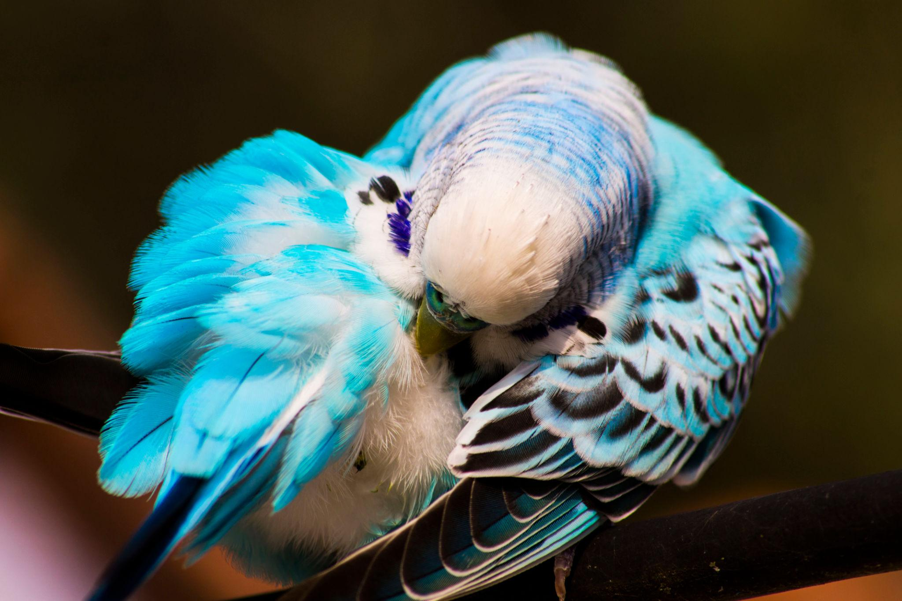
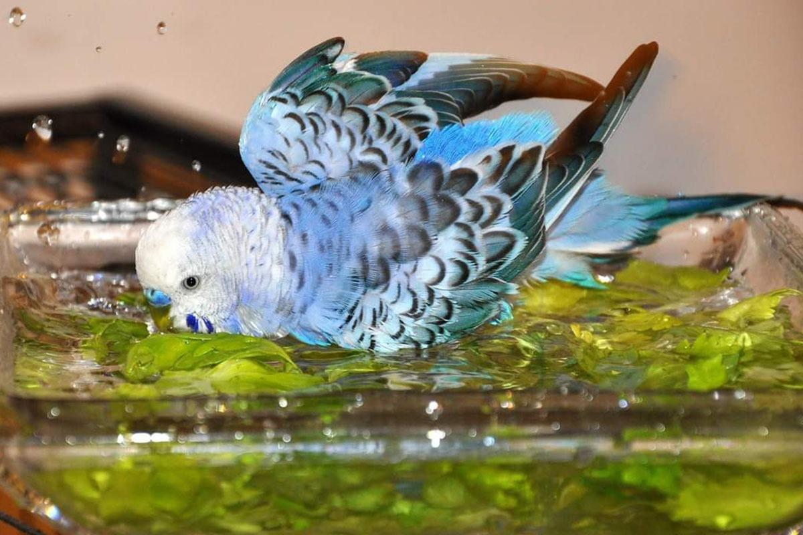
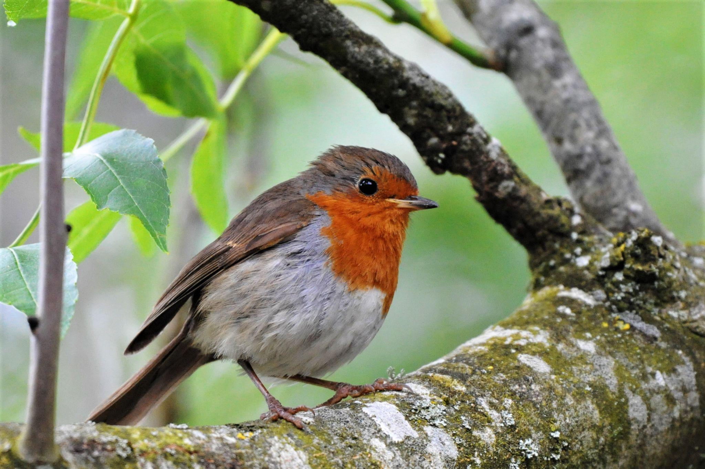
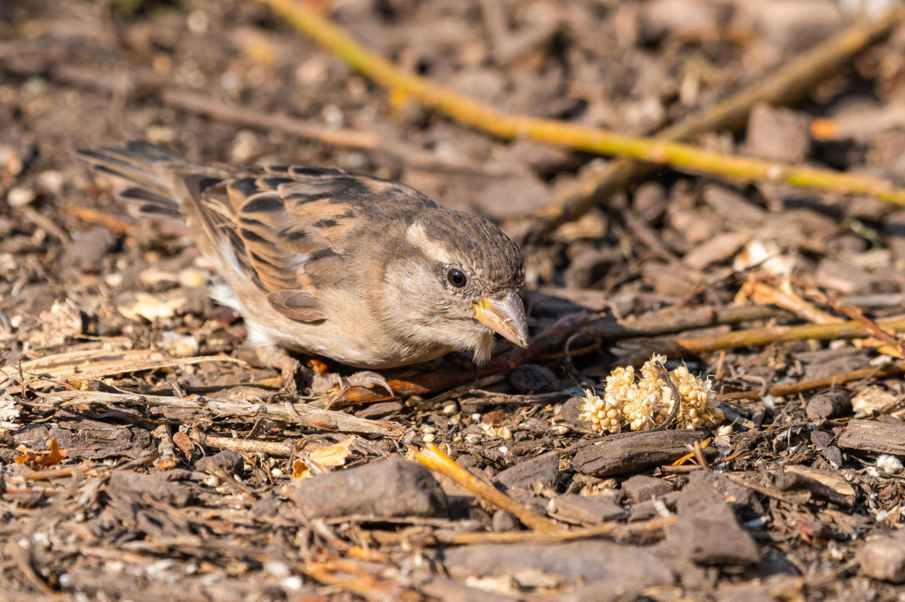
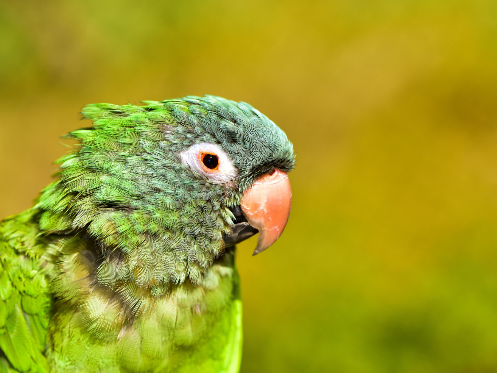
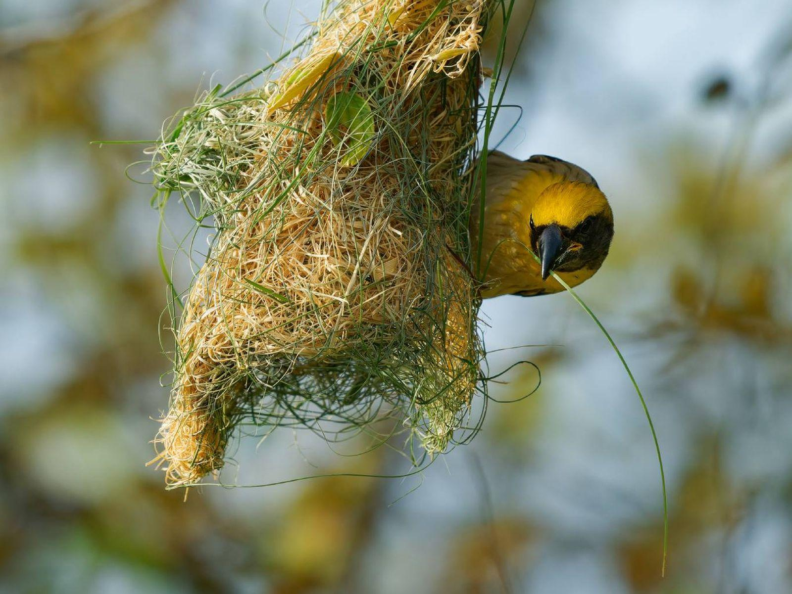
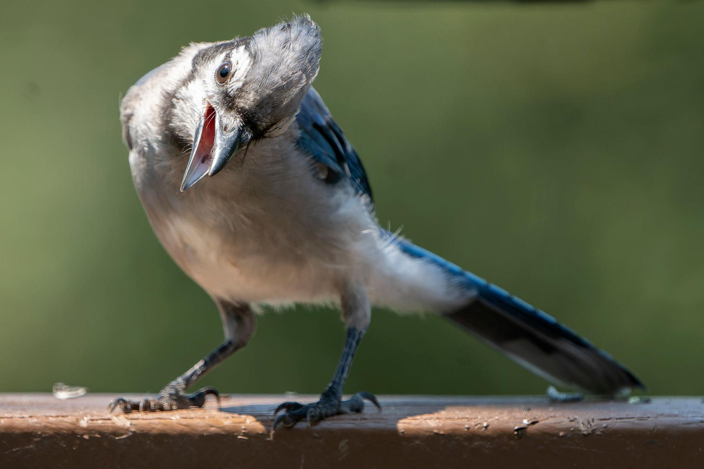

Exploration & Curiosity
Birds naturally investigate objects and surroundings using their beaks, feet, and vision. Providing safe opportunities to explore encourages mental stimulation.
Discover how birds communicate, learn, play and bond. Get to know your feathered companion beyond the cage.

Birds display a variety of natural behaviours that help them survive, explore, and adapt to their surroundings. Understanding these instincts helps provide better care and a healthier environment.
Birds naturally investigate objects and surroundings using their beaks, feet, and vision. Providing safe opportunities to explore encourages mental stimulation.
Searching, picking, and manipulating food are natural activities for birds. Foraging opportunities help keep them engaged and encourage species-appropriate feeding behaviours.
Birds use their beaks to clean, arrange, and maintain their feathers. Many species also use preen glands to help condition their plumage.
Many birds enjoy bathing and carefully regulated exposure to sunlight. These activities can support feather maintenance and natural grooming routines.
Birds need regular, uninterrupted sleep to maintain their health. Suitable resting areas and consistent light-dark cycles support healthy sleep patterns.
Flying, climbing, hopping, and perching are important natural activities. Providing appropriate space and safe opportunities for movement supports physical fitness.
Birds communicate through their posture, feather movements, wing positions, and head gestures. Learn to recognise these physical signals to better understand their needs and emotions.
An upright, relaxed stance often indicates alertness, while crouching low with a tense body may signal fear or discomfort.
Gently fluffed feathers can indicate relaxation, while feathers held tightly against the body may suggest alertness or fear. Persistent fluffing can also indicate illness.
Some birds, especially parrots, rapidly change their pupil size when excited, curious, or agitated. Look at their overall posture to understand the signal.
Stretching one or both wings is a normal behaviour, while wings held away from the body can indicate overheating, stress, or discomfort.
Tilting the head often helps birds observe objects from different angles, while head bobbing can be associated with excitement or courtship.
Standing comfortably on one foot can indicate relaxation, while gripping a perch tightly or repeatedly shifting feet may suggest insecurity or discomfort.
Birds communicate through songs, calls, and other sounds to interact with their flock, attract mates, express needs, and respond to their environment.
Many birds sing to attract mates, defend territories, and communicate with others. Singing patterns and frequency vary between species and individuals.
Short, repeated chirps and twittering sounds can occur during social interaction, everyday activity, or periods of excitement. Their meaning depends on the context.
Birds use contact calls to maintain communication with flock members and check their whereabouts, especially when separated or out of sight.
Sharp or repeated calls can warn other birds about potential threats. Some species use different calls depending on the type or location of danger.
Parrots and several other bird species can imitate sounds, including human speech and environmental noises. Mimicry is often part of their social learning.
Along with sounds, birds use movements, displays, and visual cues to communicate during courtship, territorial interactions, and social encounters.
From preening their feathers to exploring their surroundings, discover the natural habits that shape a bird's everyday life.

Birds regularly use their beaks to clean, align, and maintain their feathers. This essential grooming habit helps keep their plumage in good condition.

Many birds enjoy splashing in shallow water or bathing in rain. Bathing helps remove dirt and supports healthy feather maintenance.

Birds use their feet to grip branches and other suitable surfaces while resting, observing their surroundings, and sleeping.

Birds naturally search for food by probing, picking, and exploring their surroundings. Their foraging methods vary depending on their species and diet.

Some birds, particularly parrots, gently rub their upper and lower beaks together, producing a soft grinding sound. This commonly occurs during relaxed resting periods.

Many bird species collect twigs, leaves, grass, and other materials to construct nests. Nest-building behaviour is closely linked to breeding and raising young.

Birds often tilt their heads to view objects from different angles. This movement helps them use their vision to inspect food, surroundings, and unfamiliar objects.
Birds can be sensitive to changes in their surroundings, daily routines, and social environment. Understanding their stress triggers helps create a safer and more comfortable living space.
Loud music, shouting, sudden movements, and unfamiliar surroundings can frighten birds. Keep their living area away from excessive noise and disturbances.
Moving an enclosure, introducing unfamiliar objects, or changing household routines can make birds feel unsettled. Introduce changes gradually whenever possible.
Extreme temperatures, poor ventilation, inadequate lighting, and uncomfortable living conditions can affect a bird's well-being. Maintain a suitable, species-appropriate environment.
Many bird species have strong social needs. Insufficient interaction or lack of appropriate companionship can contribute to stress. Provide suitable social contact based on the bird's species and individual needs.
Provide secure resting areas, suitable perches, and predictable surroundings. Keep the enclosure away from household hazards and ensure the bird has opportunities to retreat when needed.
Persistent changes in activity, appetite, droppings, or feather condition may indicate illness rather than stress alone. Consult an avian veterinarian promptly to identify the underlying cause.
Changes in a bird's behaviour can result from stress, boredom, fear, environmental changes, or underlying health conditions. Recognising the causes is the first step towards helping them.
Frequent loud calling may be associated with attention-seeking, fear, boredom, or normal contact-calling behaviour. Identify triggers and provide enrichment while rewarding calm behaviour.
Biting can occur due to fear, discomfort, territorial behaviour, or unwanted handling. Respect warning signals, avoid punishment, and build trust through gradual positive interactions.
Feather-damaging behaviour may be linked to medical issues, stress, or environmental factors. Consult an avian veterinarian to investigate the cause before making changes to care routines.
Chewing and shredding are natural activities, but damage to unsafe household objects can be dangerous. Provide bird-safe materials and suitable toys to redirect this behaviour.
Hiding, retreating, or resisting interaction may indicate fear or a lack of confidence. Introduce new people and experiences gradually without forcing contact.
Repeated pacing, excessive rocking, or other repetitive movements may indicate an unsuitable environment, stress, or health concerns. Seek veterinary advice and review daily enrichment.
Birds thrive with patience, positive reinforcement, and mental stimulation. Encourage natural behaviours through gentle training and engaging activities.
Teach your bird to step onto your hand or a perch using gentle cues and rewards. Never force interaction, and allow your bird to build confidence gradually.
Reward desired behaviours immediately with small, bird-safe treats or praise. Consistent rewards help birds associate positive actions with pleasant experiences.
Encourage natural food-searching instincts with bird-safe foraging toys, paper-based puzzles, and hidden food rewards to keep your bird mentally engaged.
Provide safe toys for chewing, shredding, climbing, and exploring. Rotate toys regularly to maintain curiosity and prevent boredom.
Teach your bird to touch a target stick with its beak. Reward each successful attempt to encourage learning and make everyday interactions easier.
Maintain consistent feeding, sleep, exercise, and interaction schedules. Predictable routines help birds feel secure and support their overall well-being.
Understanding your bird's behaviour is the first step towards building trust and providing the right care. Explore our bird guides to learn about their natural instincts, communication, and well-being.
Understanding Bird Social Behaviour & Bonding
Birds are social creatures that communicate and form bonds through interaction, shared activities, and flock behaviours. Discover how to support their social needs.
Respect Personal Space
Allow birds to approach and interact at their own pace. Avoid forced handling, respect signs of discomfort, and give them space when needed.
Interactive Playtime
Spend time playing with bird-safe toys, practising simple activities, and offering supervised opportunities for exploration to strengthen your bond.
Flock Interactions
Many bird species enjoy socialising with their own kind. Provide compatible companions with enough space, food stations, and resources to reduce competition.
Social Environment
Place the bird's enclosure in a calm area where it can observe household activity without constant disturbance, loud noises, or excessive handling.
Gradual Introductions
Introduce new birds or people gradually. Keep unfamiliar birds in separate enclosures initially and allow them to become comfortable before supervised interactions.
Building Trust & Bonding
Use calm voices, predictable routines, and positive reinforcement. Consistent, gentle interactions help birds develop confidence and trust with their caregivers.